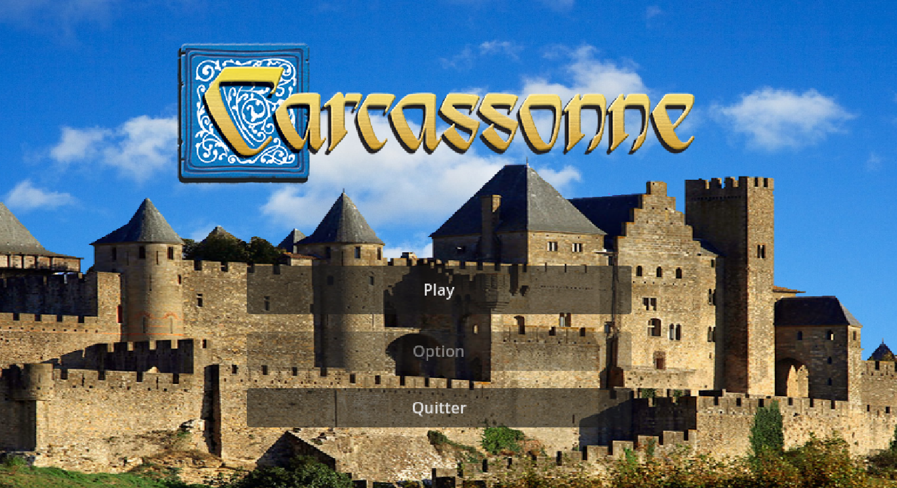
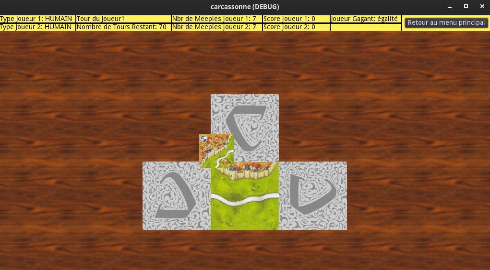

Spécialisé dans le service informatique, je développe des systèmes informatique innovantes, robustes et sécurisées. Ma spécialisation couvre le développement informatique, l'installation et la gestion informatique et la sécurité informatique avec une expertise certifiée.
10+ Projets Réalisés
Bac +5 Années d'étude et Titre RNCP Certifié
15+ Langage de Programmation & Technologies
5+ Hackathons & Certifications
Mes Services
De la simple installation de réseaux informatiques à la conception de réseaux virtuels complexes, je couvre un large panel de services informatiques.

Expérience professionnel dans la conception et ingénierie de logiciels dans différents langage de programmation comme C/C++, Python, Java

Formation solide en dépoiement, installation et documentation de réseaux informatiques, sur des technologies comme Cisco, Promox, GNS3, Linux, Windows Server.

Déploiement de VLAN - Active Directory - GPO, mise en place de Firewall avec PFSENSE et analyse de paquet avec Wireshark.
Mes Réalisations Professionnelles
Projets techniques réalisés dans un cadre professionnel et compétitif, couvrant l'analyse des besoins, la conception, la mise en œuvre et la maintenance de solutions informatiques adaptées aux contraintes techniques et opérationnelles.
Naval Group - Ingénieur Concepteur Développeur Logiciel - Stage Stage de 6 mois dans l'industrie Maritime et la Défense sur lequel j'ai développé un générateur de plugins pour le logiciel Wireshark en Python et Lua, afin d'analyser le réseau informatique d'un navire de défense.
Hackathon International organisé par Huawei à Nuremberg Projet en équipe de 3 personnes, qui consiste à optimiser le coût financier d'une batterie BESS en Python - simulation de charge/décharge et évaluation ROI par pays. ➜ Lien du projet
Hackathon organisé par XPR Ledger à Paris Participation au Hackathon XPR Ledger à Paris autour de la blockchain et du smart contract. L'objectif du projet était de vérifier la véracité kilométrique d'une véhicule avec une application web ➜ Lien du projet
Projets Réalisés
Sélection de projets mettant en œuvre des compétences avancées en réseaux, systèmes et développement.
-
Projet DuckStore - HomeLab (Projet en continue)
Je possède une maquette où j'implémente des outils professionnels en système et réseau.
Proxmox Windows Server PfSense PfSense -
Hackathon Root-Me
Hackathon sur les outils de sécurités sur la plateforme Root-Me.
Forensic Challenge Hacking Team -
Projet de Travail d'Étude et de Recherche (TER) IA
Implémentation d'un jeu de société en C++ pour développer une IA et y faire une analyse d'optimisation et de graphe. Démo jouable en ligne :
➜ Lien du projetCapture d'écran
 C++ MiniMAx
C++ MiniMAx -
Implémentation de l'algorithme RSA
Développement de l'algorithme RSA en langage C en équipe de 8 personnes.
➜ Lien du projetCapture d'écran
 C RSA
C RSA -
Projet Space Adventure
Premier projet en groupe codé en Python et Tkinter d'un jeu consistant à éviter des obstacle à bord d'un vaisseau spatiale.
➜ Lien du projetCapture d'écran
 Python Tkinter
Python Tkinter
Diplômes et Certifications
Certifications professionnelles validant mes compétences en réseau, systèmes et cloud.
RNCP Administrateur Systèmes Réseaux Cloud - IPI Formation sur la mise en place d'outils professionnels pour l'installation, le déploiement, virtualisation et la maintenance de structures réseaux infomatique.
Master en Ingénierie des Réseaux et des Systèmes - Paris Saclay Formé au sein d'un grand pôle scientifique français, j'ai acquis des compétances solides en Réseaux et Systèmes Informatique. Que ce soit de la mise en place d'architecture, d'optimisation et de conceptions théorique, j'ai acquis une grande rigueur scientifique et critique.
Licence Informatique Fondamentale Licence sur les fondamentaux scientifique informatique
Me contacter
Une question, un projet ou une opportunité ? N'hésitez pas à me contacter.
- Email taariq.deda@gmail.com
- Github https://github.com/dytq
- Linkedlin https://www.linkedin.com/in/tq-dy/